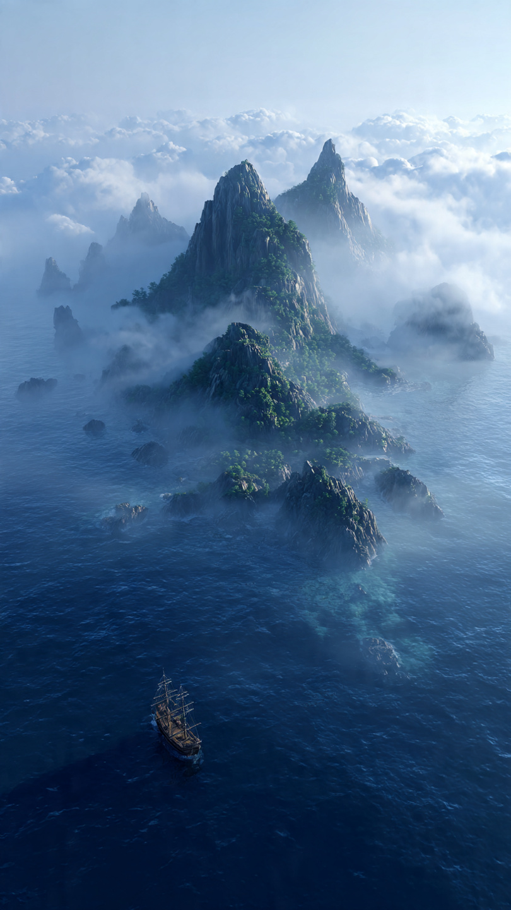
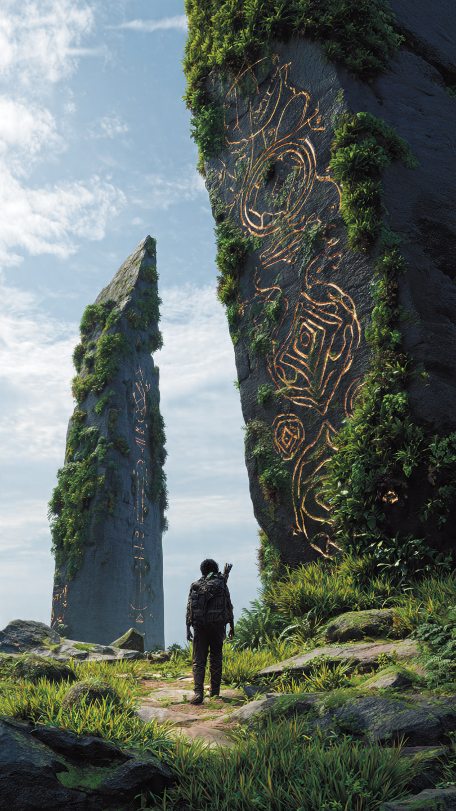

منذ مئات السنين، كان البحارة يتناقلون قصة جزيرة غامضة لا تشبه أي جزيرة أخرى.
لم تكن تظهر على الخرائط الحديثة.
لكنها كانت مرسومة بوضوح في خرائط قديمة جدًا، كُتب بجانبها:
"جزيرة الأفق الأخير."
وكانت الملاحظة أسفل الاسم أكثر غرابة:
"كل من يقترب منها... تختفي من أمامه."
ضحك الكثيرون من هذه الحكاية.
وقالوا إن البحارة القدماء كانوا يتخيلون أشياء بسبب العواصف والضباب.
لكن لم يستطع أحد تفسير سبب اختفاء عشرات السفن التي حاولت الوصول إلى الموقع نفسه عبر القرون.
لم يُعثر على حطام.
ولا ناجين.
ولا أي أثر.
وكأن البحر ابتلعهم بالكامل.
في مدينة ساحلية صغيرة، كان يعيش شاب يُدعى نوح.
كان والده قبطانًا مشهورًا اختفى في البحر منذ خمسة عشر عامًا.
وكل ما تركه خلفه كان صندوقًا خشبيًا صغيرًا يحتوي على بوصلة قديمة وخريطة ممزقة.
في إحدى الليالي، بينما كان نوح ينظف الخريطة، سقطت عليها قطرة ماء.
وفجأة...
بدأ حبر قديم يظهر من تلقاء نفسه.
ورسم طريقًا جديدًا لم يكن موجودًا من قبل.
كان ينتهي عند دائرة صغيرة في منتصف المحيط.
وفوقها كُتب بخط قديم:
"إذا تحركت النجوم... ستظهر الجزيرة."
قرر نوح أن يكمل رحلة والده.
استأجر سفينة صغيرة، وجمع ثلاثة من أصدقائه.
وبعد أيام من الإبحار، وصلوا إلى الموقع المحدد.
لكنهم لم يروا شيئًا.
مجرد بحر هادئ يمتد إلى الأفق.
وبينما كانوا يستعدون للعودة، تحركت البوصلة وحدها.
بدأت تدور بسرعة.
ثم توقفت فجأة وهي تشير إلى الفراغ أمام السفينة.
في اللحظة نفسها...
هبط ضباب أبيض كثيف فوق الماء.
واختفت الشمس.
وبدأت أمواج البحر تتحرك في دوائر غريبة.
ثم ظهرت من بين الضباب قمم جبال خضراء.
تلتها أشجار عملاقة وشلالات تتدفق مباشرة إلى البحر.
لقد ظهرت الجزيرة.
صرخ أحد البحارة بفرح:
"ها هي!"
لكن ما إن تقدمت السفينة عدة أمتار...
حتى بدأت الجزيرة تتلاشى ببطء.
ثم اختفت تمامًا.
كأنها لم تكن موجودة.
ساد الصمت.
وقبل أن ينطق أحد بكلمة...
سمع نوح صوتًا يأتي من داخل الضباب يقول:
"أنتم لا تبحثون عن الجزيرة...بل الجزيرة هي التي تختار من يدخلها."
📷 الصورة رقم 1

تبادل نوح وأصدقاؤه النظرات في صمت.
كان الصوت واضحًا، لكنه لم يأتِ من أي شخص على السفينة.
وفجأة توقفت الأمواج تمامًا.
حتى الرياح اختفت.
وأصبح البحر ساكنًا بشكل مخيف.
ثم بدأت البوصلة القديمة التي ورثها عن والده تضيء بلون أزرق لم يره من قبل.
ارتفعت البوصلة قليلًا في الهواء، وأطلقت شعاعًا من الضوء نحو الضباب.
وفي اللحظة نفسها...
بدأت الجزيرة تظهر من جديد.
لكن هذه المرة لم تكن بعيدة.
بل أصبحت أمام السفينة مباشرة.
كان هناك رصيف حجري قديم، وكأنه ينتظر وصولهم منذ سنوات طويلة.
اقترب نوح بحذر، ونزل إلى اليابسة.
وما إن لامست قدماه الأرض...
اختفى الضباب كله.
كانت الجزيرة أجمل من أي مكان رآه في حياته.
أشجار ضخمة تحمل ثمارًا تتوهج ليلًا.
أنهار صافية بلون الزمرد.
طيور ذات أجنحة زرقاء لامعة.
وقلاع قديمة مغطاة بالنباتات.
لكن الغريب...
أن كل شيء بدا وكأنه متوقف بين الماضي والحاضر.
وبينما كان يتجول، وجد ساعة حجرية عملاقة في منتصف ساحة واسعة.
لكن عقاربها كانت تدور في اتجاهات مختلفة.
وفي قاعدتها كُتبت عبارة:
"هنا... لا يسير الزمن كما تعرفه."
شعر نوح بقشعريرة.
وتذكر كلام البحارة عن اختفاء السفن.
تابع السير حتى وصل إلى كوخ خشبي صغير.
طرق الباب.
فتح الباب رجل بلحية طويلة وشعر يميل إلى الشيب.
نظر الرجل إلى نوح للحظات...
ثم اتسعت عيناه بدهشة.
وسقط الكوب الذي كان يحمله من يده.
قال بصوت مرتجف:
"نوح...؟"
تجمد نوح في مكانه.
كان ينظر إلى وجه يعرفه جيدًا من الصور القديمة.
إنه والده.
ركض نحوه واحتضنه بقوة.
لكن والده بدا مرتبكًا وقال:
"غادرت المنزل منذ أسبوع فقط..."
لم يصدق نوح ما سمعه.
بالنسبة له...
مرت خمسة عشر سنة.
أما بالنسبة لوالده...
فلم تمر سوى أيام قليلة.
وقبل أن يتمكن الأب والابن من استيعاب ما يحدث...
اهتزت الجزيرة كلها.
وانشق البحر المحيط بها.
وخرج من الأعماق مخلوق هائل، جسمه مغطى بالأصداف السوداء، وعيناه تلمعان بلون أخضر غريب.
ثم دوّى صوته في السماء:
"لقد كُسر ختم الجزيرة...وحان وقت اختيار الحارس الجديد."
📷 الصورة رقم 2

ارتفعت الأمواج حول الجزيرة حتى أصبحت كالجدران العملاقة، بينما خرج المخلوق الهائل من البحر بالكامل.
كان أطول من أشجار الجزيرة، وجسده مغطى بقواقع وأحجار بحرية قديمة، وفي منتصف صدره بلورة زرقاء تتوهج مع كل موجة.
وقف نوح أمامه دون أن يتراجع، بينما أمسك والده بيده وقال:
"لا تخف... لقد رأيته من قبل."
نظر نوح إليه بدهشة.
فأكمل والده:
"منذ وصولي إلى هنا، علمت أن هذا المخلوق ليس وحشًا."
"إنه حارس الجزيرة."
خفض المخلوق رأسه، وقال بصوت يشبه هدير البحر:
"هذه الجزيرة ليست مكانًا عاديًا."
"إنها تقع خارج الزمن."
"ولهذا لا يستطيع أحد الوصول إليها إلا إذا سمحت له."
"فلو بقيت ظاهرة دائمًا، لطمع البشر في كنوزها، وتحولت إلى ساحة للحروب."
ثم نظر إلى نوح مباشرة.
وأضاف:
"لكن قوة الجزيرة بدأت تضعف."
"ولا بد من اختيار حارس جديد."
ظهرت دوائر من الضوء على الأرض.
وفي وسطها ارتفعت البلورة الزرقاء من صدر الحارس، حتى أصبحت تطفو أمام نوح.
قال الحارس:
"إذا قبلت هذه القوة..."
"ستصبح حارس الجزيرة."
"لكنك ستعيش خارج الزمن."
"لن تكبر."
"ولن تعود إلى عالم البشر."
ثم التفت إلى والده وقال:
"أما إذا رفض..."
"فسوف تعودان معًا، لكن الجزيرة ستختفي إلى الأبد."
ساد الصمت.
كان القرار أصعب مما تخيل.
نظر نوح إلى والده.
ثم إلى البحر.
ثم إلى القرى والمدن التي تركها خلفه.
أدرك أن الناس هناك ينتظرون عودة والده منذ سنوات.
وقال بهدوء:
"لا أريد أن أكون خالدًا."
"أريد أن أعيش مع من أحب."
ابتسم والده بفخر.
وقال:
"هذا هو القرار الذي كنت أتمنى أن تتخذه."
ابتسم الحارس هو الآخر.
وقال:
"لقد اجتزت الاختبار."
"فالحارس الحقيقي ليس من يطلب القوة..."
"بل من يستطيع التخلي عنها."
عادت البلورة إلى صدره.
ثم رفع يده نحو السماء.
فبدأت الجزيرة تضيء بأكملها.
وانفتحت بوابة من الضوء على الشاطئ.
عبر نوح ووالده البوابة.
وفي لحظة واحدة...
وجدا نفسيهما على متن السفينة من جديد.
كانت الشمس ما تزال في المكان نفسه.
وكأن الرحلة لم تستغرق سوى دقائق.
لكن الخريطة القديمة اختفت.
وتحولت إلى ورقة بيضاء.
أما البوصلة...
فتوقفت عن الحركة إلى الأبد.
عاد الأب والابن إلى مدينتهما، واستقبلهم الجميع بفرحة كبيرة.
ولم يصدق أحد القصة التي رواها نوح.
لكن كلما وقف على الشاطئ وقت الغروب، كان يرى في الأفق ضوءًا أزرق خافتًا يختفي بين الأمواج.
فيبتسم...
لأنه يعلم أن الجزيرة ما زالت موجودة.
تراقب العالم بصمت.
وتنتظر اليوم الذي تحتاج فيه إلى حارس جديد.